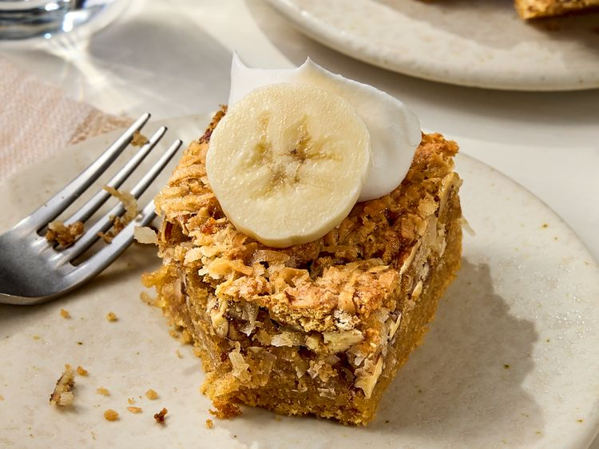

Sawdust Pie
Main

-
Prep Time
15 mins
-
Cook Time
1 hr
-
Cool Time
1 hr 10 mins
-
Total Time
2hrs 25 mins
-
Servings
24
Description
These sawdust pie bars offer a delightful interplay (kinky) of textures and flavours. Each bite delivers a satisfying chewiness from the coconut, a buttery crunch from the toasted pecans and a warm honeyed depth from the graham crackers.
Ingredients
- baking spray with flour
- 5 large eggs
- 1 1/2 cups white sugar
- 2 tsp vanilla extract
- 3/4 tsp salt
- 12 graham cracker sheets
- 2 cups chopped toasted pecans
Directions
-
Step 1
Pour champagne over grapes in a large bowl until covered, cover with plastic wrap and refrigerate for 12 hours.
-
Step 2
Drain grapes and return to the bowl. Toss in sugar then spread out onto a baking sheet. Freeze at least 2 hours before serving.
-
Step 3
Serve immediately or add a few to a glass of champagne for the holidays.
Nutrification Facts
-
149
Calories
-
9g
Fat
-
17g
Carbs
-
2g
Protein